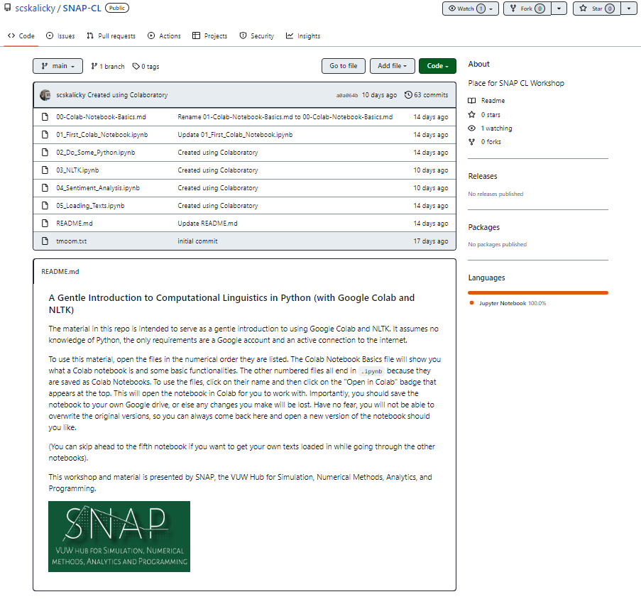
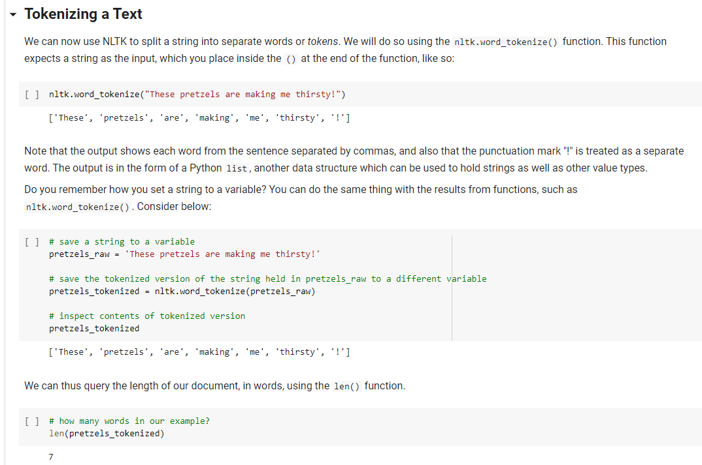
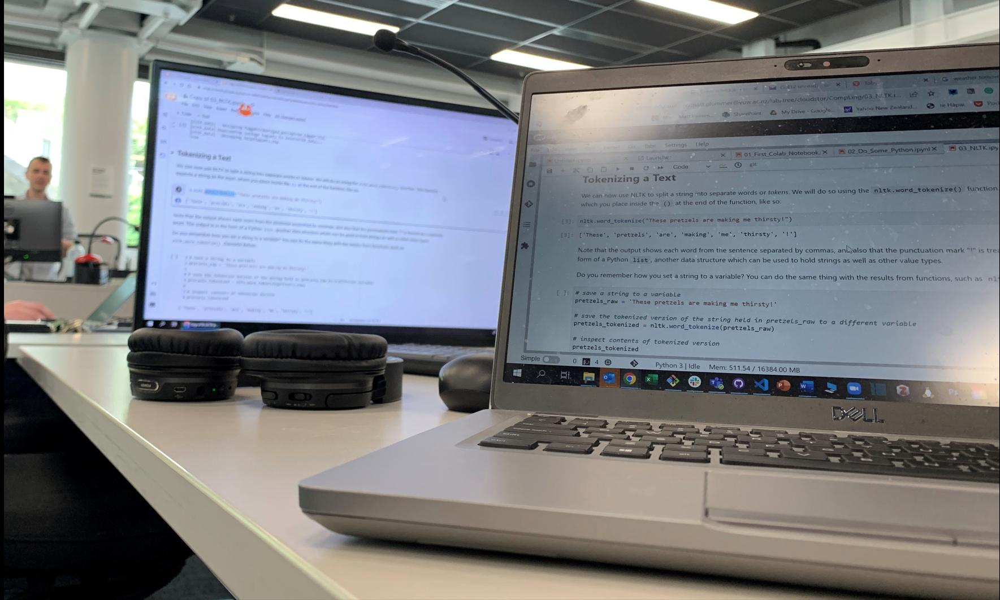

What do Lorde, Seinfeld and the Teenage Mutant Ninja Turtles have in common? Aside from being awesome, properties of all three can be represented as text, whether that be song lyrics, episode scripts, or theme songs. Text allows for a unifed representation of data, and researchers across different disciplines and methods all draw from text in different ways.
The unifying nature of text as data
Regardless of the different sources of texts or research questions being asked, the analysis of text presents similar constraints and affordances for all researchers. Aspects of such analyses range from practical considerations such as how to clean and normalise a text, to wanting to query information about the text, such as its length and other lingusitic properties. In many instances, adopting a computational approach to these analyses is good practice because it provides a degree of consistency and efficiency when compared to manual human analysis. Computational approaches also make possible previously impossible tasks, such as analysing hundreds, thousands, or millions of texts for various linguistic properties.
Yet, learning how to perform computational anlayses of texts might seem daunting to some researchers, especially if they have not learned any computer programming or other anlaytic approaches in the past.
Planning the workshop
As a means to provide a gateway into learning computational text analysis, SNAP designed an interactive, follow-along workshop open to all students and staff at Te Herenga Waka VUW. The purpose of was to provide a gentle introduction to three pieces of technology which can provide any researcher with the tools needed to perform basic computational analyses of texts.
The first tool is Google Colaboratory - think of it like a Google Doc that can run code. Using a Google Colab notebook allows one to get right into coding without worrying about installing anything on their computer. The second tool is the programming language Python - which is built right into the Colab notebook. The third tool is the Natural Language Tool Kit (NLTK)], a Python library designed to perform a wide variety of computational linguistic analyses. And yes, NLTK is also built right in. All you need for the workshop is a web browser, a Google account, and a desire to learn.
The materials are open source and hosted on Github, including instructions for explaining the material and providing examples. This means means that interested parties who did not attend the workshop can benefit from self study of the material. Others can add to or tweak the materials as they see fit, either by copying the repo or suggesting edits to the original, allowing for repurposing and recycling for more specific applications.

What’s more is that during the workshop, the materials were tested on CloudStor’s SWAN which can be accessed with VUW credentials. We’ll be seeing about the potential for these tools to be used for similar purposes in the future.
Doing the workshop
On the day of the workshop, attendees ranged from post-grad to Professor, and included representatives from School of Linguistics and Applied Language Studies, School of Mathematics and Statistics, Malaghan Research Institute, Wellington School of Business and Government, Centre for Academic Development and the Research Office. Pre-existing knowledge of Python among the attendees ranged from zero to heaps, and as such the workshop also benefitted from the presense of two undergraduate research assistants, both graduates of LING 226: Introduction to Computational Linguistics, from which much of this workshop material was drawn. Three of the attendees also benefitted by attending a Software Carpentry workshop in the preceding days, allowing them to chain together their freshly-learned Python knowledge and the material in this workshop.
The workshop ran for about 3 hours and attendees were able to successfully split Seinfeld quotes into words, count the frequency of terms in the Ninja Turtles Theme Song, and check the sentiment of some Lorde lyrics.

One attendee who was a bit unsure about learning Python stated that they “actually really liked” the workshop, which is surely the highest praise one could expect to receive. Seriously, though, many participants mentioned the workshop was an enjoyable and easy way to learn about Python and text analysis, which is exactly what we wanted it to be. Mission accomplished!

A version of this workshop will be presented at ResBaz Aotearoa 2022 - any interested can sign up here